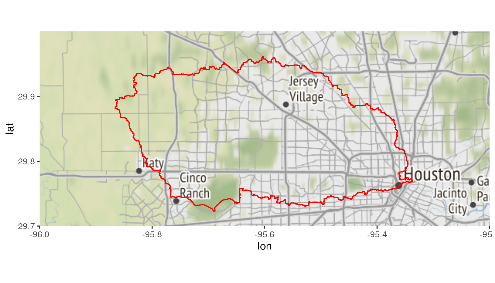
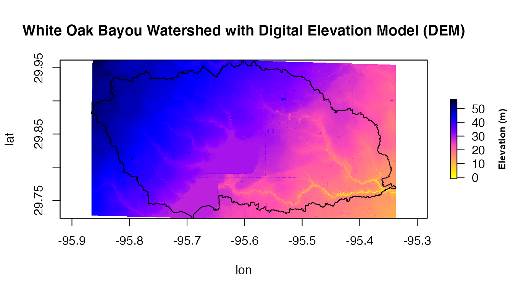
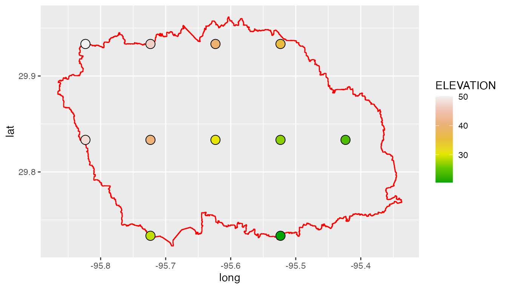
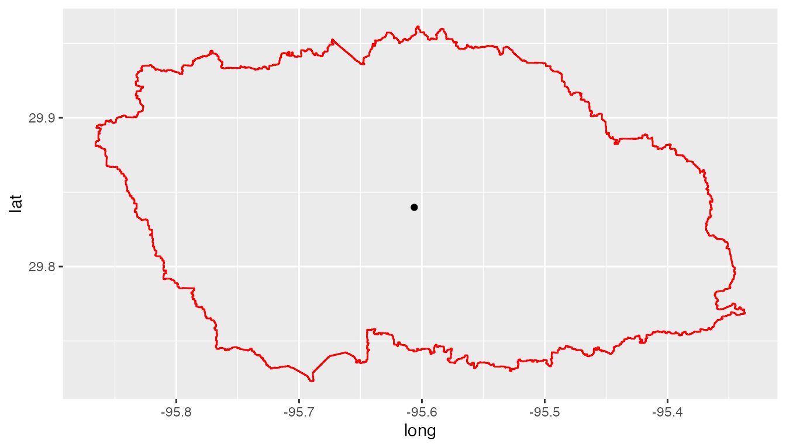

NASAaccess package has multiple functions such as
GPMpolyCentroid and GPMswat that download,
extract, and reformat rainfall remote sensing data of TRMM and IMERG from NASA servers for grids
within a specified watershed shapefile.
Let’s explore GPMpolyCentroid and GPMswat
functions. ## Basic use
Let’s look at an example watershed that we want to examine near Houston, TX:
library(ggmap)
#> Loading required package: ggplot2
#> Google's Terms of Service: https://cloud.google.com/maps-platform/terms/.
#> Please cite ggmap if you use it! See citation("ggmap") for details.
library(raster)
#> Loading required package: sp
library(ggplot2)
library(rgdal)
#> Please note that rgdal will be retired by the end of 2023,
#> plan transition to sf/stars/terra functions using GDAL and PROJ
#> at your earliest convenience.
#>
#> rgdal: version: 1.5-28, (SVN revision 1158)
#> Geospatial Data Abstraction Library extensions to R successfully loaded
#> Loaded GDAL runtime: GDAL 3.2.1, released 2020/12/29
#> Path to GDAL shared files: /Users/imohamme/Library/R/x86_64/4.1/library/rgdal/gdal
#> GDAL binary built with GEOS: TRUE
#> Loaded PROJ runtime: Rel. 7.2.1, January 1st, 2021, [PJ_VERSION: 721]
#> Path to PROJ shared files: /Users/imohamme/Library/R/x86_64/4.1/library/rgdal/proj
#> PROJ CDN enabled: FALSE
#> Linking to sp version:1.4-6
#> To mute warnings of possible GDAL/OSR exportToProj4() degradation,
#> use options("rgdal_show_exportToProj4_warnings"="none") before loading sp or rgdal.
#> Overwritten PROJ_LIB was /Users/imohamme/Library/R/x86_64/4.1/library/rgdal/proj
#Reading input data
dem_path <- system.file("extdata",
"DEM_TX.tif",
package = "NASAaccess")
shape_path <- system.file("extdata",
"basin.shp",
package = "NASAaccess")
dem <- raster(dem_path)
shape <- readOGR(shape_path)
#> OGR data source with driver: ESRI Shapefile
#> Source: "/private/var/folders/8t/45w1tdfs1vj3dy1tchbw3pmrhr_gxz/T/RtmpL9j95Z/temp_libpathdc4c23344eca/NASAaccess/extdata/basin.shp", layer: "basin"
#> with 1 features
#> It has 4 fields
#> Integer64 fields read as strings: OBJECTID disID
shape.df <- ggplot2::fortify(shape)
#> Regions defined for each Polygons
#plot the watershed data
myMap <- get_stamenmap(bbox = c(left = -96,
bottom = 29.7,
right = -95.2,
top = 30),
maptype = "terrain",
crop = TRUE,
zoom = 10)
#> Source : http://tile.stamen.com/terrain/10/238/422.png
#> Source : http://tile.stamen.com/terrain/10/239/422.png
#> Source : http://tile.stamen.com/terrain/10/240/422.png
#> Source : http://tile.stamen.com/terrain/10/241/422.png
#> Source : http://tile.stamen.com/terrain/10/238/423.png
#> Source : http://tile.stamen.com/terrain/10/239/423.png
#> Source : http://tile.stamen.com/terrain/10/240/423.png
#> Source : http://tile.stamen.com/terrain/10/241/423.png
ggmap(myMap) +
geom_polygon(data = shape.df,
aes(x = long, y = lat, group = group),
fill = NA, size = 0.5, color = 'red')
The geographic layout of the White Oak Bayou watershed example used in this demonstration is depicted above. Whiteoak Bayou is a tributary for the Buffalo Bayou River (Harris County, Texas). In order to use NASAaccess we also need a digital elevation model (DEM) raster layer. Let’s see the White Oak Bayou watershed DEM and a more closer look at the study watershed example.
# create a plot of our DEM raster along with watershed
plot(dem,
main="White Oak Bayou Watershed with Digital Elevation Model (DEM)",
col=rev(bpy.colors()),
xlab='lon',
ylab='lat',
legend = T,
legend.args=list(text='Elevation (m)',
side=4,
font=2,
line=2.5,
cex=0.8))
plot(shape , add = TRUE)
Now, let’s examine GPMswat:
library(NASAaccess)
GPMswat(Dir = "./GPMswat/",
watershed = shape_path,
DEM = dem_path,
start = "2020-08-1",
end = "2020-08-3")Examining the rainfall station file generated by
GPMswat
GPMswat.precipitationMaster <- system.file('extdata/GPMswat',
'precipitationMaster.txt',
package = 'NASAaccess')
#Reading GPMswat header file
GPMswat.table<-read.csv(GPMswat.precipitationMaster)
head(GPMswat.table)
#> ID NAME LAT LONG ELEVATION
#> 1 2160842 precipitation2160842 29.93337 -95.82337 50.16166
#> 2 2160843 precipitation2160843 29.93337 -95.72340 46.68206
#> 3 2160844 precipitation2160844 29.93337 -95.62343 39.72196
#> 4 2160845 precipitation2160845 29.93337 -95.52346 35.58193
#> 5 2164442 precipitation2164442 29.83343 -95.82337 48.02116
#> 6 2164443 precipitation2164443 29.83343 -95.72340 40.47534
dim(GPMswat.table)
#> [1] 11 5GPMswat generated ascii table for each available grid
located within the study watershed. There are 11 grids within the study
watershed and that means 11 tables have been generated.
GPMswat also generated the rainfall stations file input
shown above GPMswat.table (table with columns: ID, File NAME,
LAT, LONG, and ELEVATION) for those selected grids that fall within the
specified watershed.
Now, let’s see the location of these generated grid points:
ggplot() +
geom_polygon(data = shape.df,
aes(x = long, y = lat, group = group),
fill = NA,
colour = 'red') +
geom_point(data=GPMswat.table,
aes(x=LONG,
y=LAT,
fill=ELEVATION),
shape=21,
size = 4) +
scale_fill_gradientn(colours = terrain.colors(7))
We note here that GPMswat has given us all the GPM data grids that fall
within the boundaries of the White Oak Bayou study watershed.
The time series rainfall data stored in the data tables (i.e., 11
tables) can be viewed also. looking at reformatted data from the first
grid point as listed in the rainfall station file generated by
GPMswat
GPMswat.point.data <- system.file('extdata/GPMswat',
'precipitation2160842.txt',
package = 'NASAaccess')
#Reading data records
read.csv(GPMswat.point.data)
#> X20200801
#> 1 32.22795868
#> 2 1.80884695
#> 3 0.07029478The GPMswat has generated a ready format ascii tables
that can be ingested easily to the Soil and Water Assessment Tool SWAT model or any other hydrological
model of choice.
Now, let’s examine GPMpolyCentroid.
GPMpolyCentroid(Dir = "./GPMpolyCentroid/",
watershed = shape_path,
DEM = dem_path,
start = "2019-08-1",
end = "2019-08-3")Examining the rainfall station file generated by
GPMpolyCentroid
GPMpolyCentroid.precipitationMaster <- system.file('extdata/GPMpolyCentroid',
'precipitationMaster.txt',
package = 'NASAaccess')
GPMpolyCentroid.precipitation.table <- read.csv(GPMpolyCentroid.precipitationMaster)
#plotting
ggplot() +
geom_polygon(data = shape.df,
aes(x = long, y = lat, group = group),
fill = NA,
colour = 'red') +
geom_point(data=GPMpolyCentroid.precipitation.table,
aes(x=LONG,y=LAT))
We note here that GPMpolyCentroid has given us the GPM data grid that falls
within a specified watershed and assigns a pseudo rainfall gauge located
at the centroid of the watershed a weighted-average daily rainfall
data.
sessionInfo()
#> R version 4.1.2 (2021-11-01)
#> Platform: x86_64-apple-darwin17.0 (64-bit)
#> Running under: macOS Big Sur 10.16
#>
#> Matrix products: default
#> BLAS: /Library/Frameworks/R.framework/Versions/4.1/Resources/lib/libRblas.0.dylib
#> LAPACK: /Library/Frameworks/R.framework/Versions/4.1/Resources/lib/libRlapack.dylib
#>
#> locale:
#> [1] en_US.UTF-8/en_US.UTF-8/en_US.UTF-8/C/en_US.UTF-8/en_US.UTF-8
#>
#> attached base packages:
#> [1] stats graphics grDevices utils datasets methods base
#>
#> other attached packages:
#> [1] rgdal_1.5-28 raster_3.5-15 sp_1.4-6 ggmap_3.0.0 ggplot2_3.3.5
#>
#> loaded via a namespace (and not attached):
#> [1] Rcpp_1.0.8 lattice_0.20-45 tidyr_1.2.0
#> [4] png_0.1-7 rprojroot_2.0.2 digest_0.6.29
#> [7] utf8_1.2.2 R6_2.5.1 plyr_1.8.6
#> [10] evaluate_0.15 highr_0.9 httr_1.4.2
#> [13] pillar_1.7.0 RgoogleMaps_1.4.5.3 rlang_1.0.1
#> [16] curl_4.3.2 rstudioapi_0.13 jquerylib_0.1.4
#> [19] rmarkdown_2.11 pkgdown_2.0.2 textshaping_0.3.6
#> [22] desc_1.4.0 labeling_0.4.2 stringr_1.4.0
#> [25] munsell_0.5.0 compiler_4.1.2 xfun_0.29
#> [28] pkgconfig_2.0.3 systemfonts_1.0.4 htmltools_0.5.2
#> [31] tidyselect_1.1.2 tibble_3.1.6 codetools_0.2-18
#> [34] fansi_1.0.2 crayon_1.5.0 dplyr_1.0.8
#> [37] withr_2.4.3 bitops_1.0-7 grid_4.1.2
#> [40] jsonlite_1.8.0 gtable_0.3.0 lifecycle_1.0.1
#> [43] magrittr_2.0.2 scales_1.1.1 cli_3.2.0
#> [46] stringi_1.7.6 cachem_1.0.6 farver_2.1.0
#> [49] fs_1.5.2 bslib_0.3.1 ellipsis_0.3.2
#> [52] ragg_1.2.2 generics_0.1.2 vctrs_0.3.8
#> [55] rjson_0.2.21 tools_4.1.2 glue_1.6.2
#> [58] purrr_0.3.4 jpeg_0.1-9 fastmap_1.1.0
#> [61] yaml_2.3.5 colorspace_2.0-3 terra_1.5-21
#> [64] memoise_2.0.1 knitr_1.37 sass_0.4.0